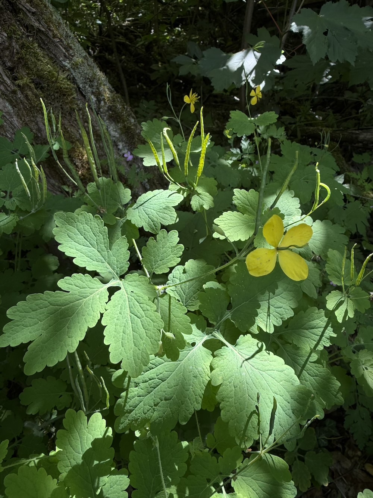
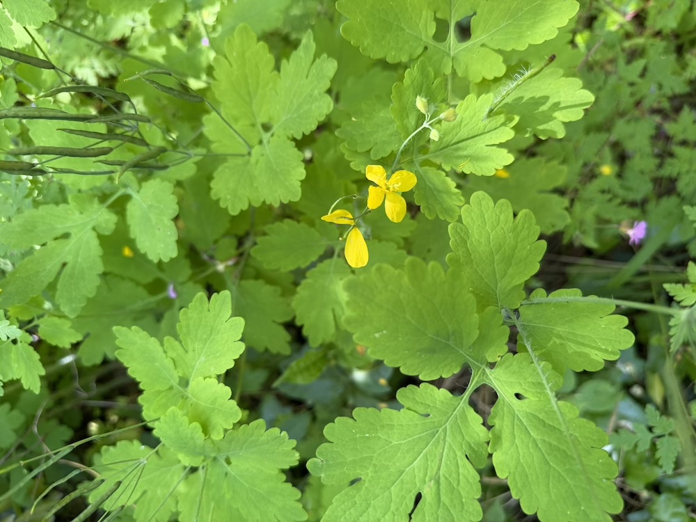

Der orange Saft, der heilt und reizt
Wer einen Stängel des Schöllkrauts abbricht, erlebt eine Überraschung: orange-gelber, milchiger Saft tritt aus. Dieser Saft enthält Alkaloide, die Warzen tatsächlich angreifen können — die traditionelle Warzen-Behandlung. Aber Vorsicht: Der Saft reizt empfindliche Haut und Schleimhäute. Tröpfchen direkt auf die Warze geben, nicht großflächig anwenden. Eine Pflanze, die Heilung und Vorsicht im selben Tropfen vereint.
Schwalben-Mythos
Der lateinische Name „chelidonium“ kommt vom griechischen „chelidon“ — Schwalbe. Antike Autoren glaubten, Schwalben würden den Saft des Schöllkrauts verwenden, um die Augen ihrer Jungen zu „öffnen“. Quatsch natürlich, aber poetisch. Bis heute heißt die Pflanze in vielen Sprachen „Schwalbenkraut“ oder ähnlich (englisch: greater celandine, von „chelidon“).